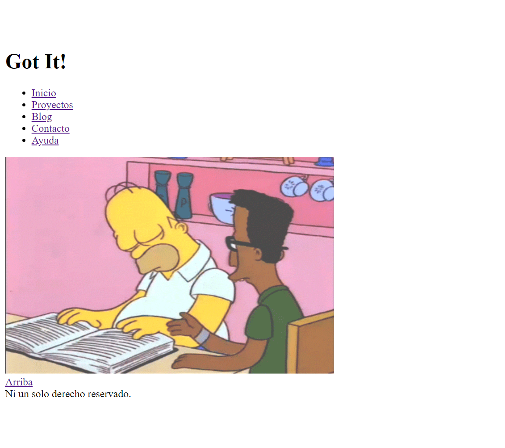

Primer desafio del curso
Genera el wireframe de una vista para molbile y una vista para desktop teniendo en cuenta el tema elegido. Luego, crea los archivos html de las secciones y utiliza las etiquetas semánticas vistas hasta ahora en clase.
 Archivos del desafio 1No hubo mucha complicación, no tenia mucha idea de que hacer exactamente con el wireframe